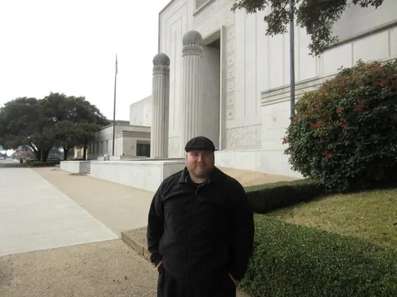
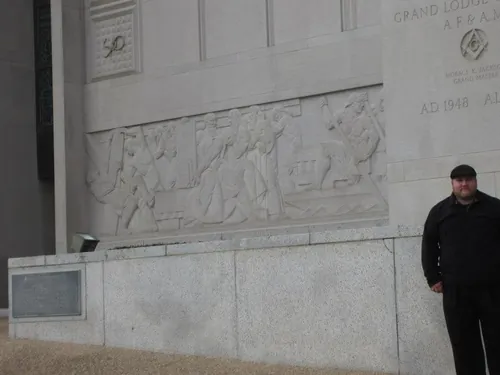

Grand Lodge of Texas
January 2013 (to confirm) · Waco, Texas (city to confirm)

“I have to say this building lives up to its namesake, it was a Grand Lodge. They hold their annual meeting in the auditorium, which seats 4,000. When you enter the front door you are greeted by two statues of Great Masons of Texan history. … If you turn right it will take you to the Grand Lodge Offices & Library (Bro Bruce does a great tour). Down stairs is a nice museum.”

